超魔丸Busters
下载 & 安装
A Minecraft modpack for kingstar and his friends.
版本 —
Minecraft —
Fabric Loader —
更新于 —
00怎么装
- 下载 PCL 启动器
- 下载 整合包
- 将整合包 拖进 PCL 窗口 开始安装
- 等待安装完成，启动游戏，选择 「多人游戏」
- 列表中已有服务器，直接 连接 即可
01启动器
02整合包版本 —

—
—
文件校验（SHA-256）
正在读取 GitHub Release…
03服务器
07f4acdef99b.ofalias.net:56477
点击「连通性测试」，查询服务器状态
04更新日志
正在读取 GitHub Release…